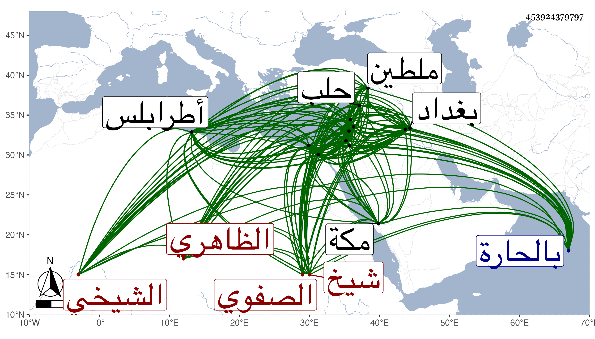

0902Sakhawi.DawLamic.ITO20230111-ara1.EIS1600.453924379797
Biography ID: 453924379797
748
خليل بن شاهين غرس الدين الشيخي شيخ الصفوي الظاهري برقوق والد عبد الباسط الآتي . ولد في شعبان سنة ثلاث عشرة وثمانمائة بالحارة الخاتونية من بيت المقدس فلما بلغ خمس عشرة سنة تحول مع أبيه إلى القاهرة وحفظ القرآن واشتغل ونظم فأكثر ، ولازم بعد أبيه خدمة أزبك الدوادار قليلا في جملة مماليكه ثم صار بعد القبض عليه من جملة مماليك الأشرف برسباي بسفارة صهره زوج أخته الخواجا إبراهيم بن قرمش ثم ولاه نظر اسكندرية ثم حجوبيتها ثم نظر بيع البهار المتعلق بالذخيرة ثم في سنة سبع وثلاثين نيابتها وشكر في مباشراته ثم تزوج بأصيل أخت خوند جلبان أم العزيز وحملت إليه إلى اسكندرية فدخل بها وصار عديلا للأشرف ثم استقدمه القاهرة على إمرة طلبخاناه وقرر في نظر دار الضرب ثم نقله إلى الوزارة ولكنه استعفى منها بعد مدة يسيرة وأمره أن يحضر الخدم مع المقدمين ثم سافر في سنة أربعين أميرا على المحمل ثم ولي نيابة الكرك فلما مات الأشرف صرفه الظاهر عن نيابتها وولاه اتابكية صفد طرخانا ثم ظهر له نصيحته فولاه نيابة ملطية فاستمر فيها زيادة على أربع سنين تقريبا ، قدم في غضونها القاهرة مرتين نقل في الثانية منهما عنها إلى أتابكية حلب ثم امتحن بها وسجن بقلعتها مقيدا لشكوى نائبها منه ثم أطلق بعناية شيخنا وأقام بحرم الخليل طرخانا ، وأنعم عليه بما يزيد على كفايته ثم نقل إلى نيابة القدس ثم أعفي منها بعد مدة وتوجه إلى دمشق على تقدمة بها كانت معه حين النيابة ثم أضيف إليه إمرة عشرة زيادة على التقدمة ثم صرف عنهما ثم ولي إمرة الحاج الدمشقي مرة في آخر الأيام الظاهرية وأخرى في أول الدولة الأشرفية إينال وأعطى إمرة عشرين بطرابلس طرخانا فتوجه إليها ثم أعيد إلى دمشق على إمرة عشرين طرخانا ورام المؤيد اعطاءه تقدمة بالقاهرة فعوجل ولكن أقره الظاهر خشقدم على امرته المشار إليها بها معفيا عن سائر الكلف السلطانية بل وأذن له بالاقامة في القاهرة وأن يحضر مجلسه في الاسبوع مرتين لمسامرته ومنادمته ثم حقد عليه وأخرج إمرته وأمره بالتوجه لبيت المقدس فالتمس منه أن يكون بمكة فأذن له وتوجه منها مع الحاج العراقي إلى العراق ودخل الحلة وبغداد وغيرهما ، فلما مات الظاهر رجع إلى حلب ثم إلى طرابلس فتمرض حتى كانت منيته بها في جمادى الأولى سنة ثلاث وسبعين ودفن بها في تربة كان أعدها لنفسه وكان يتعانى الأدب مع اشتغال ومشاركة فيه ومذاكرة حسنة بالتاريخ والشعر وفهم جيد وقد خمس البردة وكتبت عنه ما أنشدني لنفسه مما أودعته في الجواهر وخاطب به شيخنا :
| وقائلة من في القضاة بأسرهم | يلازم تقوى الله طرا بلا ضجر |
| ويرأف في الأحكام بالخلق كلهم | ويدعو لهم في كل ليل إلى السحر |
| فقلت لها فهو الإمام أولو النهى | وذاك شهاب العسقلاني بني الحجر |
| له كتب في كل فن لقارىء | وشرح عجيب للبخاري من الخبر |
| وفي النحو والتصريف لم ير مثله | كذا في المعاني والبيان وفي الأثر |
فأجابه شيخا بما كتبته عنه أيضا :
| أيا غرس فضل أثمر العلم والندى | فلله ما أزكى وما أطيب الثمر |
| يجود وينشي بالغا ما أراده | فمستطلع درا ومستنزل الدرر |
| لك الخير قد حركت بالنظم خاطرا | له مدة في العمر ولت وما شعر |
| وقلدت جيدي طوق نعماك جائدا | فغالا ونطقا صادق الخبر والخبر |
| مناسبة اسمينا خليل وأحمد | لرأس أولى النظم الإمام الذي غبر |
وكذا عندي من مراسلاته مع شيخنا غير ذلك ، وقد كتب لي ولده ترجمته بخطه وقال إن شيخنا أجازه بالفتيا والتدريس بعد أن لازمه رواية ودراية حتى كان مما سمعه عليه مناقب الشافعي من تأليفه وشهد له بأنه شارك أهل العلم في فنونهم مشاركة فطن ، إلى غير ذلك مما أورده شيخنا في عدة سجعات قال ولده وله نحو ثلاثين مصنفا في الفقه والتفسير والتعبير والتاريخ والانشاء وغيرها سمى يوسف بن تغري بردى منها المواهب في اختلاف المذاهب مرتب على أبواب الفقه والمنيف في الانشاء الشريف ، والكوكب المنير في أصول التعبير والاشارات في علم العبارات والدرة المضية في السيرة المرضية ، وديوان شعره وهو في عدة مجلدات وقال إنه أنشده قصيدة قالها للملك الظاهر . في شرح حاله حين عزل عن أتابكية حلب قصد فيها الوزن والقافية وانه وجد له مذاكرة بالشعر والتاريخ بحسب الحال .
